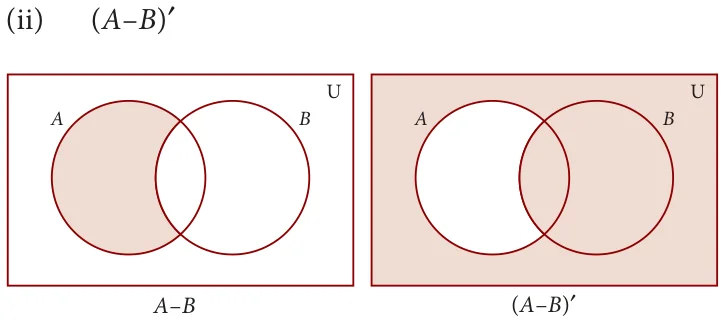
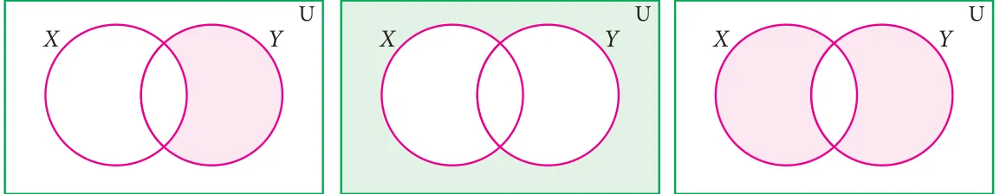

Solution

' ( - ) '

' - ( - ) '
- (AUB) '

\(\cup\) (A \(\cup\) ' Fig. 1.23 Fig. 1.24


- Using the given Venn diagram, write the elements of
- A (ii) B (iii) \(A \cup B\) (iv) \(A \cap B\)
- \(A - B\) (vi) \(B - A\) (vii) A ' (viii) B '
- U Fig. 1.25
- Find \(A \cup B\), \(A \cap B\), \(A - B\) and \(B - A\) for the following sets.
- \(A = {2\), 6, 10, 14} and B={2, 5, 14, 16}
- \(A =\) {a, b, c, e, u} and B={a, e, i, o, u}
- \(A =\) {x : \(x \in N\), \(x \le 10}\) and B={x : \(x \in W\), \(x < 6}\)
- \(A =\) Set of all letters in the word "mathematics" and \(B =\) Set of all letters in the word "geometry"
- If U={a, b, c, d, e, f, g, h}, A={b, d, f, h} and B={a, d, e, h}, find the following sets.
- A ' (ii) B ' (iii) A ' \(\cup B\) ' (iv) A ' \(\cap B\) ' (v) (A \(\cup\) B) '
- (A \(\cap\) B) ' (vii) (A ' ) ' (viii) (B ' ) '
- Let U={0, 1, 2, 3, 4, 5, 6, 7}, A={1, 3, 5, 7} and B={0, 2, 3, 5, 7}, find the following sets.
- A ' (ii) B ' (iii) A ' \(\cup B\) ' (iv)A ' \(\cap B\) ' ( v)(A \(\cup\) B) '
- (A \(\cap\) B) ' (vii) (A ' ) ' (viii) (B ' ) '
- Find the symmetric difference between the following sets.
- \(P = {2\), 3, 5, 7, 11} and Q={1, 3, 5, 11}
- \(R =\) {l, m, n, o, p} and \(S =\) {j, l, n, q}
- \(X = {5\), 6, 7} and Y={5, 7, 9, 10}
- Using the set symbols, write down the expressions for the shaded region in the following

- Let A and B be two overlapping sets and the universal set be U. Draw appropriate Venn diagram for each of the following,
- \(A \cup B\) (ii) \(A \cap B\) (iii) (A \(\cap\) B) ' (iv) (B - A) ' (v) A ' \(\cup B\) ' (vi) A ' \(\cap B\) '
- What do you observe from the Venn diagram (iii) and (v)?